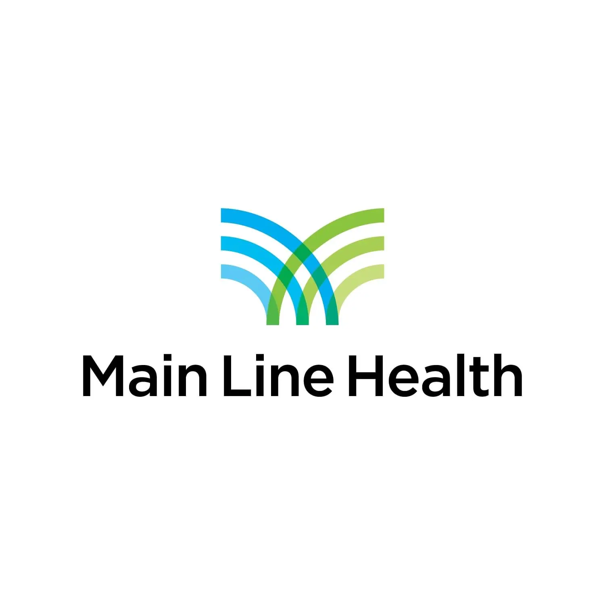

Educational and Behavioral Health Services
Educational and Behavioral Health Services typically refer to school-based or community-linked programs that support students’ emotional, social, and behavioral development alongside academic learning. These services often include counseling, mental health support, crisis intervention, and referrals to community providers so students facing emotional or behavioral challenges can get the help they need while staying engaged in school and community life. Support may range from individual therapy to group sessions, skill-building for coping strategies, and collaboration with families and teachers.
Visit ResourceCommunities that Care
Communities That Care (CTC) in the Greater Downingtown area is a coalition of schools, parents, health providers, law enforcement, and community organizations working to prevent substance use and promote positive youth development. CTC uses evidence-based programs and policy change to help students thrive academically and socially, offering parent resources, youth advocacy through groups like the Healthy Youth Positive Energy (HYPE) club, community events, and educational speaking engagements on topics like alcohol, vaping, and mental wellness.
Visit ResourceChester County Groups for Addiction Disorders
Chester County offers a range of services and support systems for people affected by addiction and co-occurring mental health conditions. Organizations like The COAD Group provide prevention education, substance use information and referral services, and outreach programs focused on behavioral health. Local treatment providers (including outpatient centers, residential care, and specialized counseling services) are accessible across the county, assisting individuals in finding appropriate care based on need and insurance status.
Visit Resource988 Lifeline
The 988 Lifeline is a nationwide, free, and confidential crisis support system available 24 hours a day, every day. By dialing or texting 988 or chatting at 988lifeline.org, anyone experiencing emotional distress, suicidal thoughts, substance use crisis, or other behavioral health emergencies can connect immediately with trained counselors who listen without judgment and help navigate next steps. This service is designed to be an easy-to-remember, frontline resource for mental health crisis support and can also guide callers toward additional local resources.
Visit Resource
Main Line HealthCare Primary Care in Downingtown
Main Line HealthCare Primary Care in Downingtown is located at Mill Town Square, 150 East Pennsylvania Avenue, Suite 250. The practice offers comprehensive primary care, internal medicine, senior health (geriatric medicine), cardiovascular diagnostic testing, and integrated behavioral health services. Physicians and providers are committed to coordinated continuity of care, focused on disease prevention and health management across a patient's lifetime. The office also houses the Lankenau Heart Group, offering a full range of heart and vascular care. Free parking is available. Call 610.280.7960 or book through MyChart.
Visit Resource365 Health Services
365 Health Services is an ACHC-accredited home care agency serving Downingtown, West Chester, and the broader Chester County community. Founded in Philadelphia in 2014, they bring professional in-home care directly to residents so individuals and families can remain safe, healthy, and independent in their own homes. Services available locally include pediatric shift care, adult nursing, personal assistance with daily activities, support for individuals with intellectual and developmental disabilities, private pay options, and veterans care. Whether a family in Downingtown is navigating a chronic illness, recovering from injury, or simply needs companionship and daily support, 365 Health Services is available 24 hours a day, 7 days a week, 365 days a year. Call (844) 669-1848.
Visit Resource